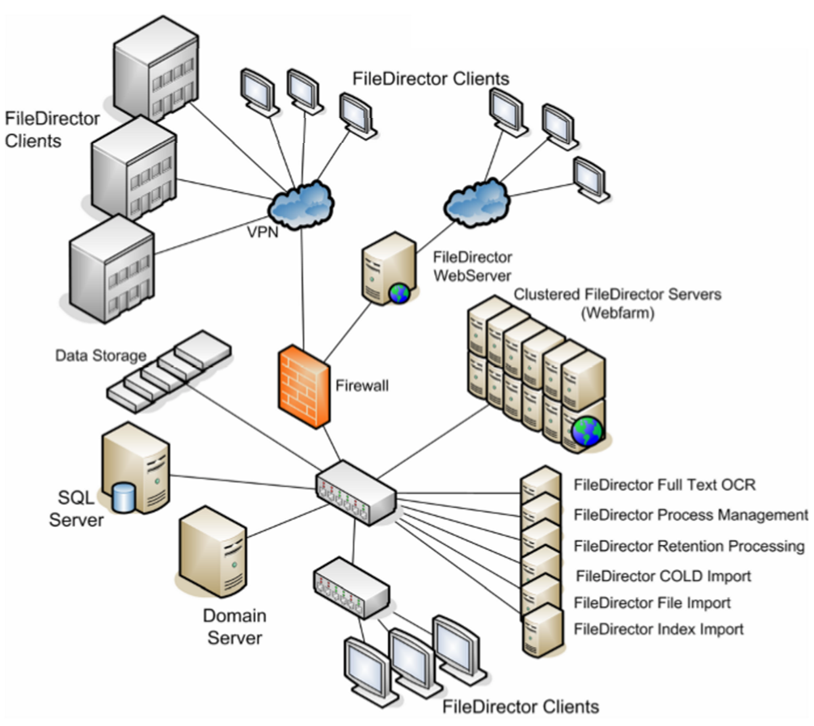

<div id="productInfo" class="content-width-wrap">
    <div id="productTitle">
        <h2>Scalable Software</h2>
        <div>
            <h4>FileDirector Can Scale Up and Down To Meet Your Needs</h4>
            <br>
            <div class="content-left">
                <p>One of the major benefits that FileDirector offers is the opportunity of growth. No matter how big or small the organization is, FileDirectors flexible architecture can adapt to meet demand. FileDirector encourages scalability externally as well as internally, allowing the growth of an organization’s document management solution to be comprehensively universal.</p>
                <br>
            </div>
            <div class="content-right content-img"></div>
            <br>
            <div class="content-img content-full">
                
            </div>
            <br><br>
            <p> Thanks to its extensive range of functions, FileDirector meets all of your requirements — today and tomorrow. Ease of use, scaleability and a wealth of expandable components make FileDirector the perfect partner for businesses of all sizes.</p>
            <br> <br>


        </div>
